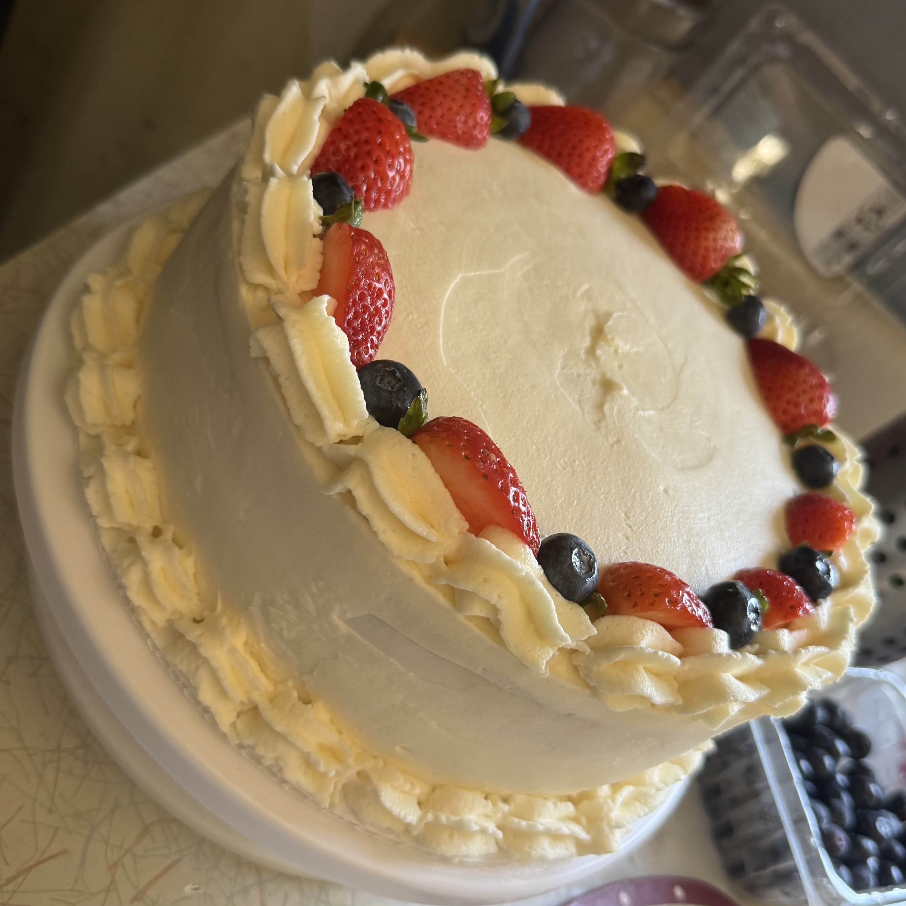
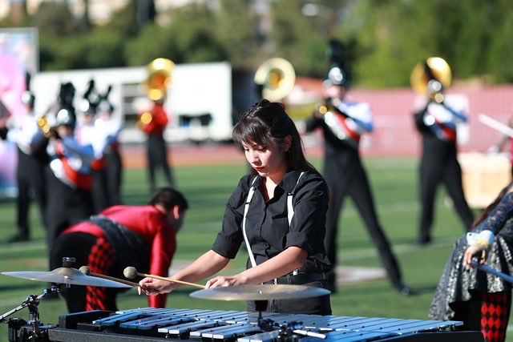
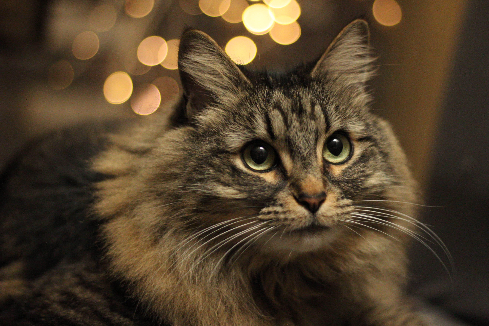

My Hobbies
Cooking and baking | Traveling | Music | Photography
Cooking and Baking

One of my favorite hobbies is cooking and baking. I enjoy making things from scratch and trying different recipes. I especially enjoy baking cakes and other desserts, but I also like making homemade foods such as pizza. I like experimenting with different recipes and flavors and learning how to make new things.
View a homemade pizza dough recipe
Traveling
I enjoy traveling and exploring new places. One place I would love to travel to again is Ixtapa. I enjoyed the beaches, scenery, and atmosphere, and it is a place I would like to visit again. I am also planning a trip to Japan in 2027, which is something I am really looking forward to.
Visit the official Ixtapa Zihuatanejo tourism website
Music

I have always loved music, and it has been an important hobby for me. I was involved in marching band, which gave me the opportunity to spend a lot of time playing music and performing. My current favorite band is Dance Gavin Dance, and I enjoy listening to their music and discovering different songs and albums.
Visit the Dance Gavin Dance website
Photography

Photography is another hobby that I enjoy. I like taking pictures of things around me, especially moments with my cat.